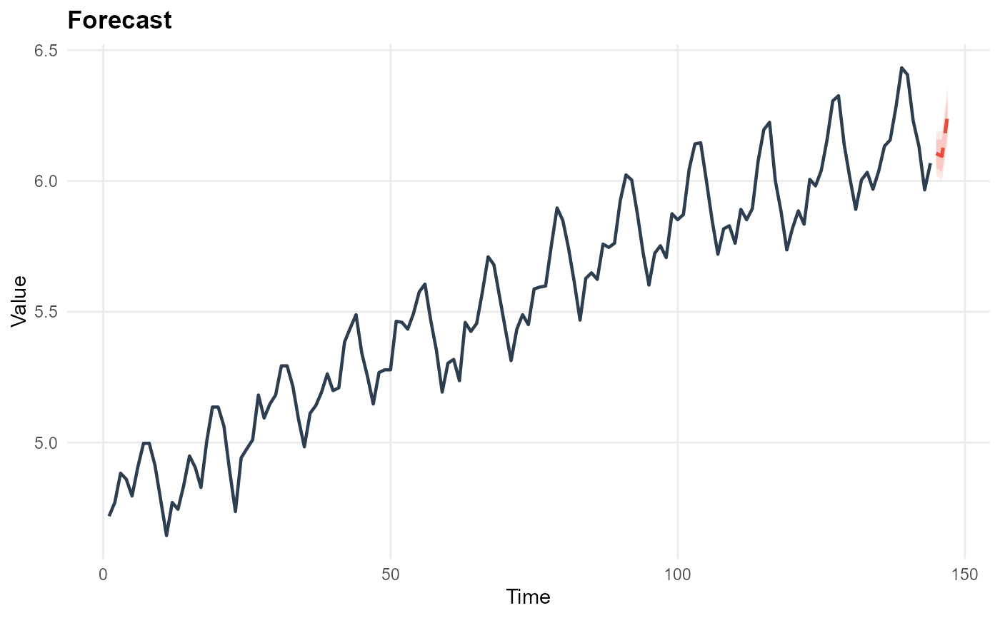

Works with the tibble returned by ts_forecast().
Usage
plot_ts_forecast(
observed,
forecast_tbl,
level = c(80, 95),
title = "Forecast",
y_lab = "Value",
trim_n = NULL
)Arguments
- observed
A numeric vector or
tsobject of the historical data.- forecast_tbl
Tibble from
ts_forecast().- level
Numeric vector. Which confidence levels to shade (must match columns in
forecast_tbl).- title
Character. Plot title.
- y_lab
Character. y-axis label.
- trim_n
Integer. Show only the last
trim_nobservations from history (defaultNULL= show all).
Examples
data(AirPassengers)
fit = ts_sarima(log(AirPassengers))
fc = ts_forecast(fit, h = 24)
plot_ts_forecast(log(AirPassengers), fc, title = "Log Air Passengers Forecast")
